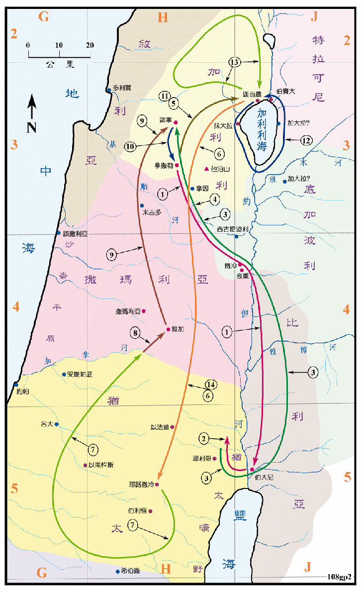

主后27年前后

行动线说明
| 序号 | 圣经 | 说明 |
|---|---|---|
| 1 | 太3:13-17，可1:9-11，路3:21-22，约1:29-34 | 耶稣从加利利的拿撒勒来到约但河东的伯大尼，约翰为他施洗，他受了洗，天就开了，圣灵降临在他身上。 |
| 2 | 太4:1-11，可1:12-13，路4:1-13 | 耶稣被圣灵引到旷野，受魔鬼四十天的试探。 |
| 太4:17，可1:14-15，路3:23 | 耶稣年约三十岁时，就传起道来，宣传神国的福音。 | |
| 3 | 约1:35-49 | 耶稣去加利利工作，在途中收安得烈、西门彼得、腓力、拿但业为门徒。 |
| 4 | 约2:1-11 | 耶稣到迦拿去参加娶亲的筵席，他使水变酒，是耶稣的头一件神迹。 |
| 5 | 约2:12 | 第一次去迦百农工作。 |
| 6 | 约2:13-3:21 | 耶稣去耶路撒冷过逾越节，他第一次洁净圣殿，并与尼哥底母谈道。 |
| 7 | 约3:22-4:2 | 耶稣到犹太地居住和施洗。 |
| 8 | 约4:3-42 | 耶稣在去加利利的路上，经过撒玛利亚的叙加城，在雅各井傍与撒玛利亚的妇人谈道。 |
| 9 | 约4:46-54 | 回到加利利，耶稣在迦拿医好大臣病重儿子的病。 |
| 10 | 路4:16-30 | 回拿撒勒工作但被拒。 |
| 11 | 太4:12-16 | 再到迦百农工作。 |
| 12 | 太4:18-22，可1:16-20，路5:1-11 | 在加利利海边传道，收西门、安得烈、雅各和约翰作门徒。 |
| 太8:1-17，可1:21-34，路4:31-41 | 回迦百农工作。 | |
| 13 | 太4:23-25，可1:35-45，路4:42-44 | 到加利利全地各会堂传道，他的名声就传遍了叙利亚，当下有许多人从加利利、低加波利、耶路撒冷、犹太、约但河外来跟着他。 |
| 太9:1-17，可2:1-22，路5:17-39 | 回迦百农工作，收马太和利未作门徒。 | |
| 14 | 约5:1-47 | 上耶路撒冷过节和工作，在毕士大池治愈瞎子。 |
主耶稣在三十岁时受洗，接着受试探，然后开始出来传道。在这一年中他南来北往於加利利和耶路撒冷之间有两次之多，而且都是一面步行、一面传道，实在是非常的辛苦，但是成果也是十分的丰硕，他的名声远播，除了犹太国的土地之外，还往北一直到叙利亚，很可能是到了幼发拉底河的河边及安提阿城。又往东到了低加波利这个高度希腊化的地区。
圣经中并没有记载主耶稣受试探的地方，按照传统的说法是在耶利哥的附近，那里有旷野，也有高山和陡峭的悬崖、离圣殿也不远，所以有相当的可信度。
主耶稣经常在犹太人的会堂传道。对犹太人来说，会堂是一个非常重要的公共场所。自从犹太人在主前六世纪起，数度被掳到巴比伦等地之后，就开始在各居留地，只要有十个犹太男人所在之处，就建有他们的会堂。其主要的功用是在安息日作敬拜神、读经和讲解律法之用，在平日则作人民聚集之处，也是教授圣经和儿童的学校，同时也是排解纠纷和福利的机构。逐出会堂是他们最重的处罚，等於将其排除到犹太人的社会之外。所以会堂对犹太人的意义非常重大，当他们流落在异地时，是犹太民族信仰的中心、精神的寄托，它保存了犹太人的宗教和文化，巩固了犹太人的团结，虽然他们分散在各地，但仍在度过了两千年艰困悠久的岁月之后，竟能奇迹似的在以色列复国，会堂的确是扮演了一个重要的角色。在新约时代，使徒们都利用会堂传讲福音，而会堂又遍布罗马帝国全地，所以对福音的传播有极大的贡献。